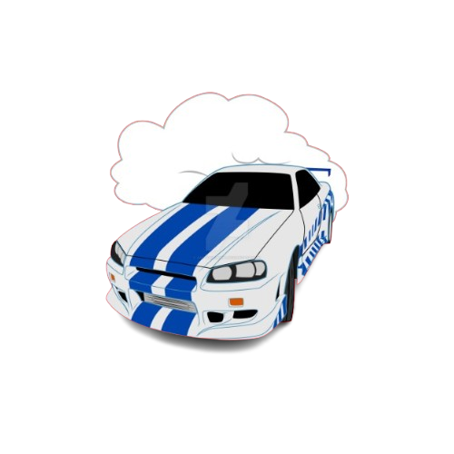
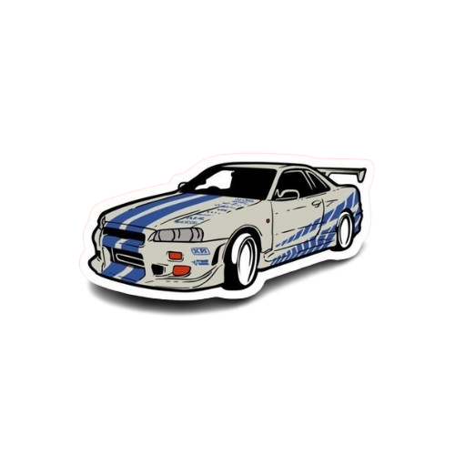

A primeira aparição notável do Nissan Skyline GT-R R34 ocorreu no primeiro filme Velozes e Furiosos (2001). Quem conduz o carro é o personagem Brian O'Conner, interpretado por Paul Walker. O Skyline GT-R R34 de Brian é pintado em um tom de azul característico e é modificado para melhorar sua
